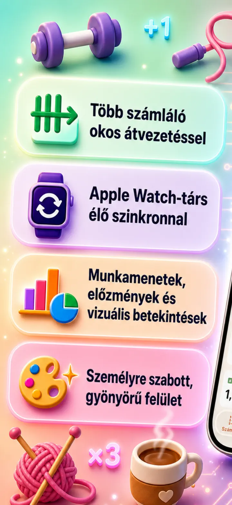
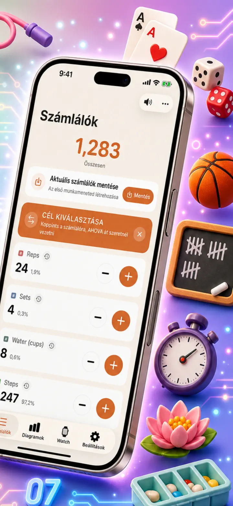
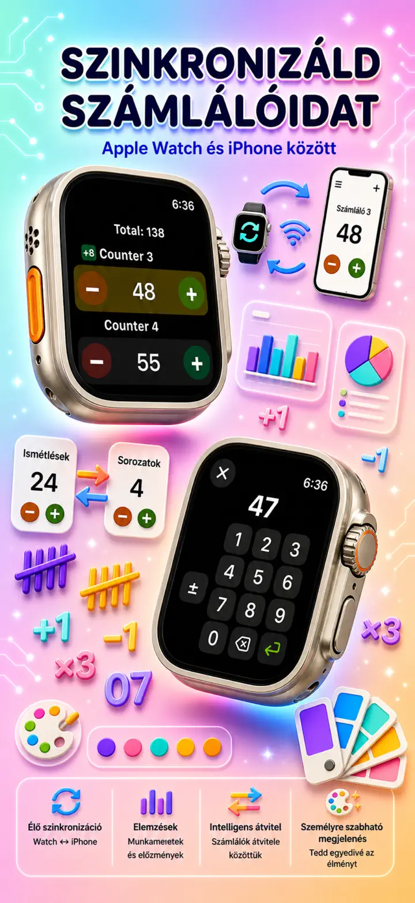
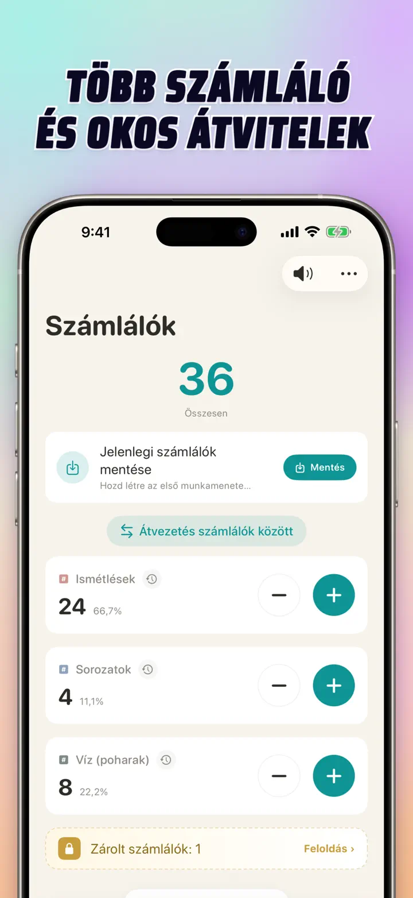
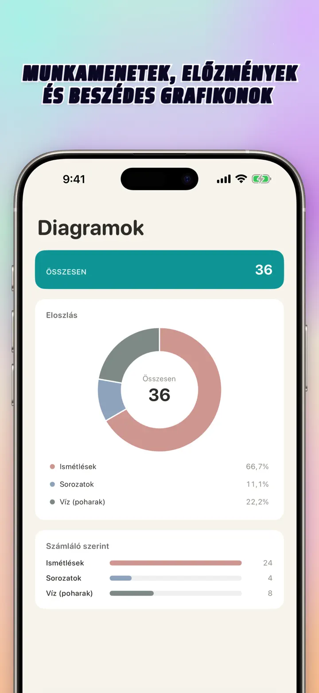
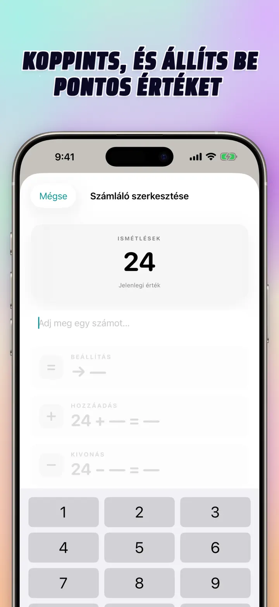
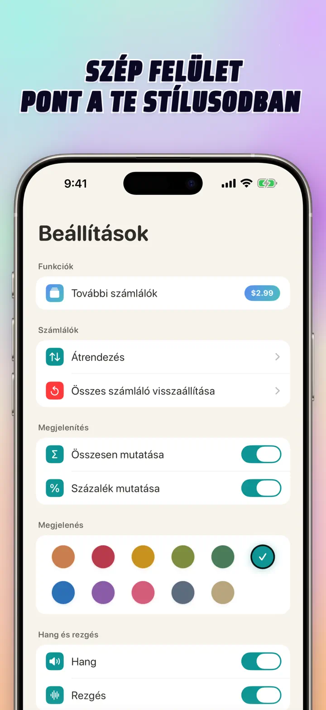
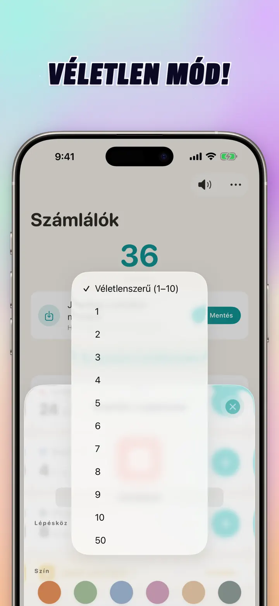

Számláló 123
Watch-sync, klikk, pontok
Új: kezdőképernyős modulok — koppints a +/- gombra a modulon az app megnyitása nélkül. Számláló és klikker Apple Watch-synckel, véletlen mód, grafikonok, előzmények.
Letöltés az App Store-ból
Az alkalmazásról
A Számláló 123 gyors és rugalmas számláló iPhone-ra, iPadre és Apple Watchra. Nevezd el a számlálókat, válassz színt, és számolj bármit — edzőtermi szetteket, kötéssorokat, olvasót, osztálypontokat, készletet, játékpontokat. Minden adat helyben marad a készüléken, offline is működik.
TESTRESZABOTT SZÁMLÁLÓK
- Hozz létre külön számlálókat tevékenységekhez, játékokhoz, rutinokhoz vagy listákhoz
- Saját név és szín minden számlálóhoz
- Húzd át az átrendezéshez
- Tartsd nyomva a gyors egymás utáni számoláshoz
- Teljesen offline — nincs regisztráció, nincs felhő
KÖZVETLEN BEVITEL & TÖMEGES MŰVELETEK
- Érintsd meg a számlálót, és állíts be közvetlenül kezdőértéket — nem kell nullázni
- Tömeges +/-: módosítsd a számlálót bármilyen számmal egy érintéssel
- Átvitel: vigyél át értéket az egyik számlálóról a másikra dupla művelet nélkül
- Saját lépés: egy érintés hozzáad 1, 5, 10, 100 vagy bármilyen számot
- Élő előnézet minden változásról
VÉLETLEN MÓD
- A számláló minden koppintásnál új 1-10 közötti értéket sorsol
- Adj hozzá vagy vonj le véletlen értékeket a + és - gombokkal
- Hasznos gyakorlatokhoz, játékokhoz, jutalmakhoz, órákhoz és rutinokhoz
- Minden véletlen koppintás bekerül a számláló előzményeibe
ÖSSZEGEK & GRAFIKONOK
- Az összes számláló teljes összege egy pillantásra
- Százalékos nézet: melyik számláló mennyivel járul hozzá
- Interaktív oszlopdiagram — válts érték (#) és százalék (%) között
- Rendezd érték szerint azonnali ranglistához
ELŐZMÉNYEK & MEGOSZTÁS
- Teljes előzmény: minden hozzáadás, kivonás és módosítás naplózva
- Mentsd el a számlálókészleteket és tölts be őket bármikor
- Oszd meg a konfigurációkat csapattársakkal, diákokkal, barátokkal
- Nézd az előzményeket dátum szerinti naplóként, csoportosított munkamenetként vagy napi/heti/havi statisztikaként
ÉLŐ SYNC APPLE WATCHCSAL
- Módosíts iPhone-on vagy Apple Watchon, az értékek szinkronban maradnak
- Valódi natív watchOS-alkalmazás — nem csak kiegészítő
- Nevek, színek és értékek szinkronban a csuklódon
- Érintés számoláshoz, hosszú nyomás ismétléshez — egyenesen az óráról
- Önállóan is működik, amikor az iPhone nincs kéznél
iPhone, iPad & APPLE WATCH
- Adaptív elrendezés minden képernyőmérethez
- Az iPad több számlálót mutat egyszerre, támogatja a Split View-t
- Adatvédelem elsősorban: helyi tárolás, nincs felhő, nincs fiók
IDEÁLIS ERRE
- Szettek és ismétlések az edzőteremben
- Kötéssorok és horgolási szemek
- Olvasó, tasbih, imagyöngyök
- Pontok az órán és jelenléti ív
- Kézilabda, röplabda, foci — gyors eredmény
- Asztalitenisz
- Készlet és raktárszámlálás
- Társasjátékok, kártya, tarokk, ulti
- Medence- és futókörök
- Madármegfigyelés
- Résztvevőszámlálás eseményeken
- Szokás- és célkövetés
Töltsd le a Számláló 123-t, és könnyítsd meg minden számlálást — tisztán, gyorsan, magánjelleggel.
Adatvédelmi szabályzat: https://masawata.net/privacy-policy.html Felhasználási feltételek: https://www.apple.com/legal/internet-services/itunes/dev/stdeula/
Képernyőképek







Számláló 123
Új: kezdőképernyős modulok — koppints a +/- gombra a modulon az app megnyitása nélkül. Számláló és klikker Apple Watch-synckel, véletlen mód, grafikonok, előzmények.
Letöltés az App Store-ból